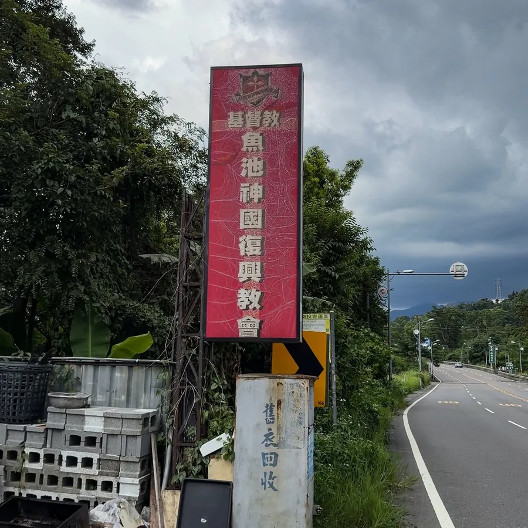
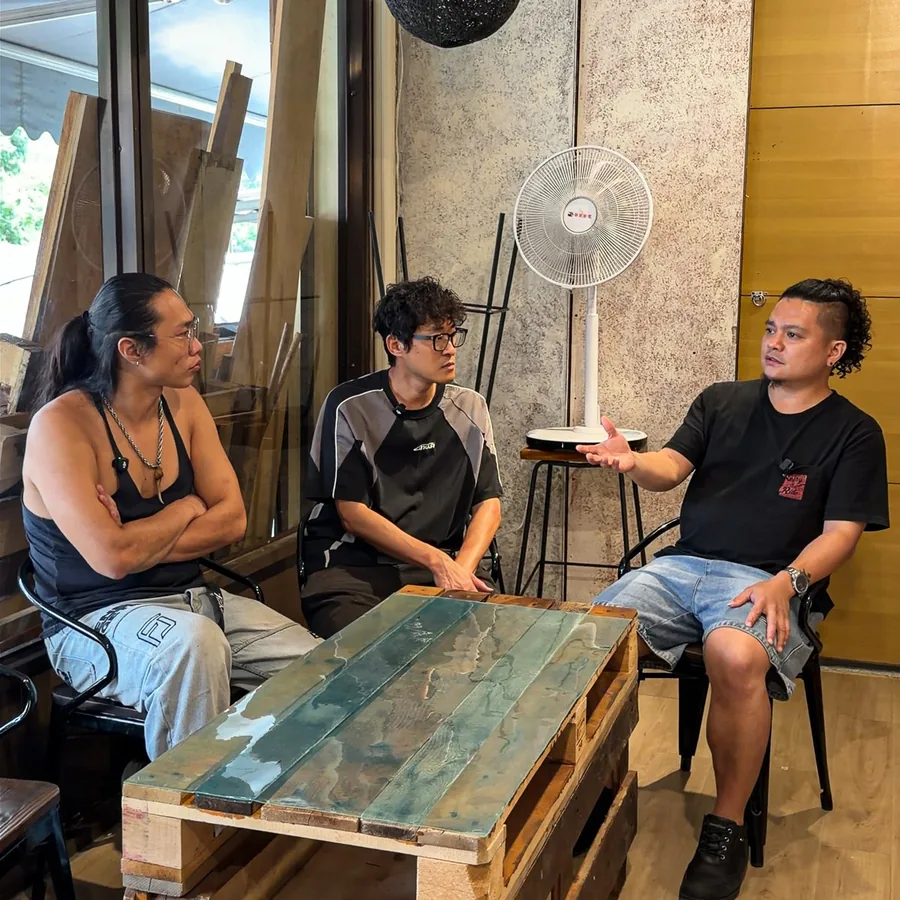
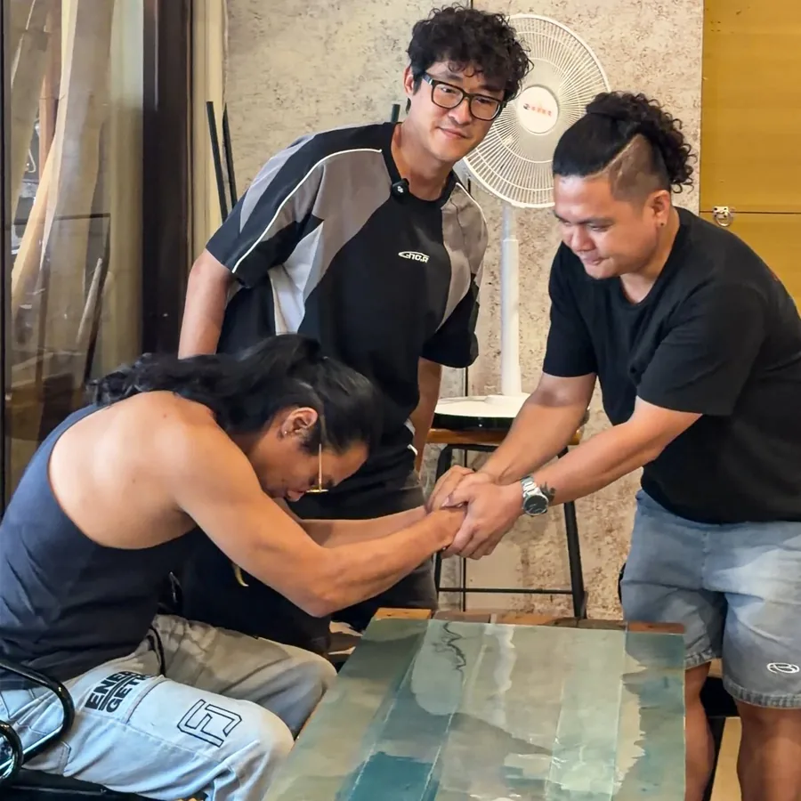

這件事是這樣開始的
魚池神國教會要把米、油、日用品、藥品送到部落和山區獨居長輩的家門口。問題是—— 山路陡、路況差，一般轎車根本上不去，遇到下雨天更危險。
所以這次不只是修一台車。我們要先幫教會找一台四輪傳動的中古車， 再由協會成員把它整理到能安全上山、撐得住長期載重。
我們這群人剛好會的就是這件事。協會成員裡有鈑金、烤漆、塗裝、包膜、鍍膜、內裝、凹痕修復，還有汽車保修與引擎底盤， 一台車從找車、驗車到整理完交出去，我們自己就能一條龍做完。技術跟工時我們無償投入， 但材料、零件、耗材要花錢——這就是這次募資的全部用途。
我們會做什麼
先找到對的車
編列 10 萬找一台四輪傳動中古車，協會成員一起看車驗車，底盤與傳動狀況是第一順位。
安全先顧好
煞車、輪胎、電瓶、燈系、雨刷——山路重載，這些不能將就。
把外觀救回來
凹痕修復、鈑金烤漆、除鏽處理——山區濕氣重，鏽不處理只會愈爛愈深。
底盤與動力
四驅系統、變速箱、懸吊、傳動——要跑山路載重，這些整個檢查整理過一遍。
做完還要顧
交車不是結束。後續定期回訪，有狀況協會成員接手協助。
20 萬會這樣用
＊ 找車、驗車、施工的技師工時與場地，全部由協會成員無償投入，不從募款支出。
＊ 受助單位：基督教魚池神國復興教會（南投縣魚池鄉）。車輛登記於教會名下，供送物資使用；協會後續負責定期回訪提供協助。
＊ 所有收支建立可追蹤帳目，於協會例會與官網公開報告；捐款收據由協會統一開立，可用於個人及企業所得稅列舉扣除。
＊ 募得金額超過目標時，超出部分優先用於提升車況（見下一段說明）；若最後仍有剩餘，將公告後轉入協會下一件公益個案。若未達目標，仍會依實際金額調整施作範圍，優先完成安全相關項目。
老實說：10 萬能找到的車，不多
我們編了 10 萬找一台四輪傳動的中古車。但四驅車本來就貴，這個預算能挑的， 不是里程跑很多，就是年份很舊——買回來還得再花一筆修，而且不知道能撐幾年。
所以這次募資沒有上限：募到越多，我們就能挑一台車況越好的車。 同樣是送物資上山，一台省心的車，跟一台三天兩頭進廠的車，對山上那些等著物資的長輩來說，差很多。
＊ 以上是我們看車的實際經驗值，實際狀況以找到的車為準——會在協會官網公開整個找車與驗車過程。
＊ 超過目標的款項全數用於提升車況（更好的車、必要的安全零件），不會挪作他用；剩餘款項若有，將公告後轉入協會下一件公益個案。
9 月 3 日，我們去了一趟魚池



📷 這是 9/3 到魚池現場勘查的實拍。依照我們一貫的原則，受助的長輩與住戶不會露臉；車輛整理過程會持續在這裡更新。